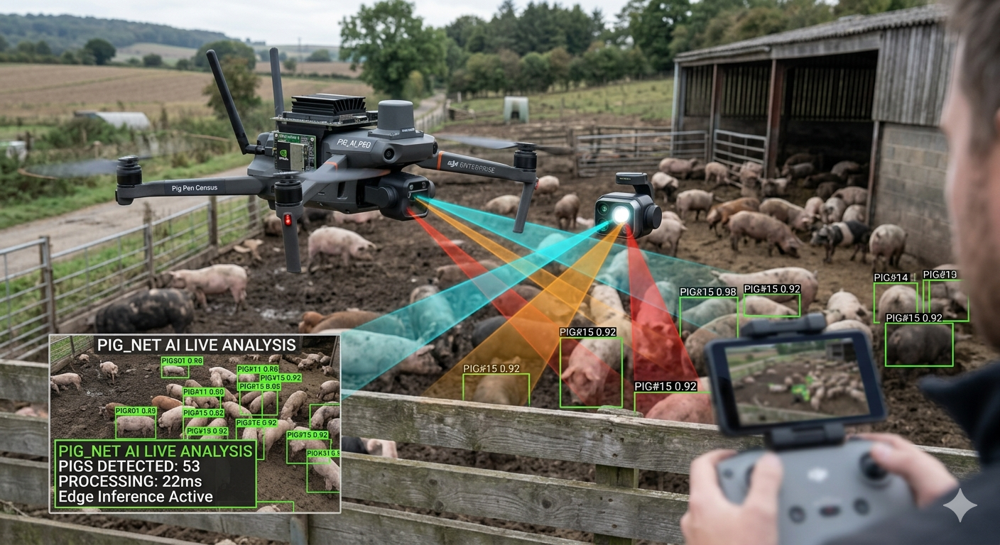

← 返回系統總覽
判別式 AI：無人機邊緣運算
從影像採集、標註、模型訓練到邊緣端離線即時推論的一站式架構
點擊下方任一階段，進入詳細介紹頁面
STAGE 1
❶ 資料格式與標註
CVAT / Roboflow
採集無人機俯視影像並轉為 YOLO 資料集格式，每張圖片配對一個
.txt
標籤檔。
查看詳情 →
▶
STAGE 2
❷ AI 模型訓練
Ultralytics YOLOv11
使用 YOLOv11 進行遷移學習，撰寫
dataset.yaml
並啟動 Python 訓練流程。
查看詳情 →
▶
STAGE 3
❸ 計數與追蹤
OpenCV + ByteTrack
掛載目標追蹤演算法，賦予每頭豬唯一 ID，避免畫面移動造成的重複計數。
查看詳情 →
▶
STAGE 4
❹ 邊緣端硬體加速
NVIDIA TensorRT
將 PyTorch 模型編譯為 TensorRT 引擎，於無人機微型電腦離線且流暢運算。
查看詳情 →

系統運作示意圖